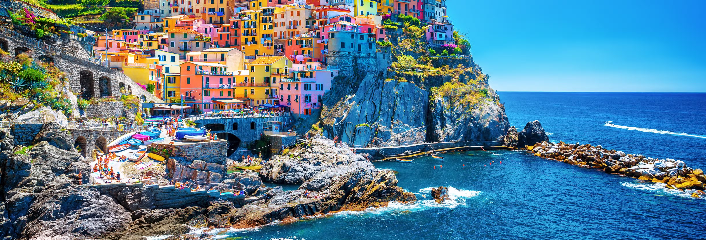

Les Cinq Terres : merveille de l’Italie
La Spezia (Ligurie, Italie)
Villages colorés, ports de pêche et croisière le long de la côte fleurie des Cinq Terres.
Voir le voyage
Votre agence de voyages spécialisée dans les séjours organisés.
Chez NovaTrip, nous nous engageons à vous offrir des expériences de voyage inoubliables. Explorez notre site pour découvrir nos destinations, nos offres spéciales et en savoir plus sur notre agence.
N'hésitez pas à nous contacter pour toute question ou pour planifier votre prochain voyage avec nous !

La Spezia (Ligurie, Italie)
Villages colorés, ports de pêche et croisière le long de la côte fleurie des Cinq Terres.
Voir le voyage
Centre-Val de Loire, France
Week-end au cœur des châteaux de la Loire, entre visite de Blois en attelage et découverte du majestueux château de Chambord.
Voir le voyage